Zaha Hadid buildings 38
Sort
 Vitra Fire Station1993 · Weil am Rhein
Vitra Fire Station1993 · Weil am Rhein Bergisel Ski Jump2002 · Innsbruck
Bergisel Ski Jump2002 · Innsbruck BMW Central Building2005 · Leipzig
BMW Central Building2005 · Leipzig Spittelau Viaducts Housing2005 · Vienna
Spittelau Viaducts Housing2005 · Vienna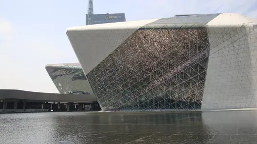
Guangzhou Opera House2010 · Guangzhou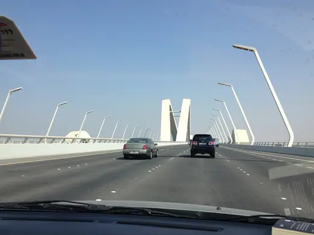
Sheikh Zayed Bridge2010 · Abu Dhabi Riverside Museum2011 · Glasgow
Riverside Museum2011 · Glasgow Galaxy SOHO2012 · Beijing
Galaxy SOHO2012 · Beijing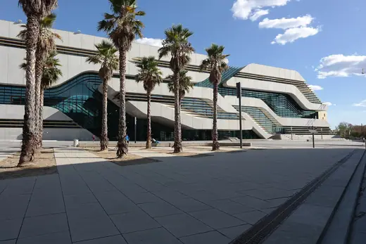
Pierresvives2012 · Montpellier Jockey Club Innovation Tower2014 · Hong Kong
Jockey Club Innovation Tower2014 · Hong Kong Wangjing SOHO2014 · Beijing
Wangjing SOHO2014 · Beijing Messner Mountain Museum Corones2015 · Bruneck
Messner Mountain Museum Corones2015 · Bruneck Salerno Maritime Terminal2016 · Salerno
Salerno Maritime Terminal2016 · Salerno King Abdullah Petroleum Studies and Research Center2017 · Riyadh
King Abdullah Petroleum Studies and Research Center2017 · Riyadh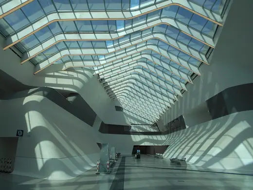
Napoli Afragola station2017 · Afragola Nanjing International Youth Cultural Centre2018 · Nanjing
Nanjing International Youth Cultural Centre2018 · Nanjing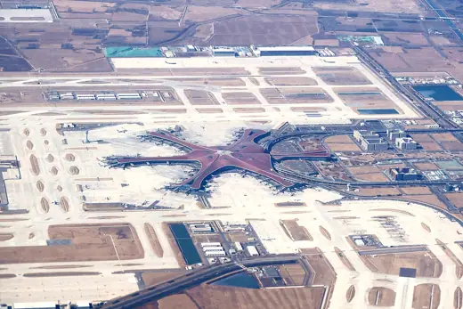
Beijing Daxing International Airport Terminal2019 · Beijing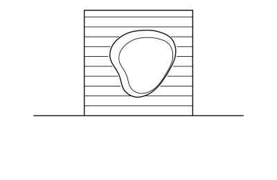
The Opus2020 · Dubai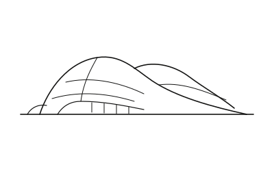
Bee'ah Headquarters2022 · Sharjah Mercury Tower2023 · St. Julian's
Mercury Tower2023 · St. Julian's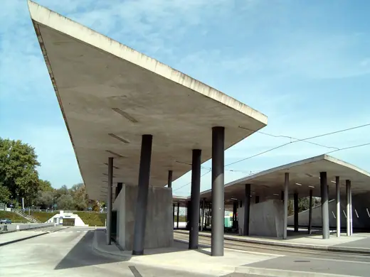
Hoenheim-Nord Tram Terminus2001 · Hoenheim Rosenthal Center for Contemporary Art2003 · Cincinnati
Rosenthal Center for Contemporary Art2003 · Cincinnati Phaeno Science Center2005 · Wolfsburg
Phaeno Science Center2005 · Wolfsburg Hungerburgbahn stations2007 · Innsbruck
Hungerburgbahn stations2007 · Innsbruck MAXXI2010 · Rome
MAXXI2010 · Rome London Aquatics Centre2011 · London
London Aquatics Centre2011 · London Eli and Edythe Broad Art Museum2012 · East Lansing
Eli and Edythe Broad Art Museum2012 · East Lansing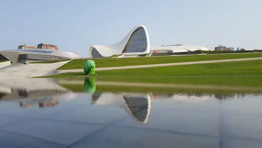
Heydar Aliyev Center2012 · Baku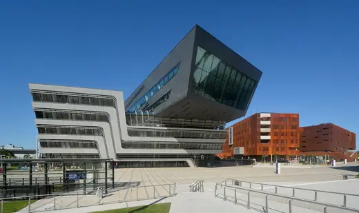
Library and Learning Center, Vienna University of Economics2013 · Vienna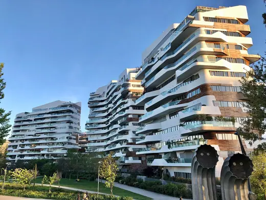
Residenze Hadid2014 · Milan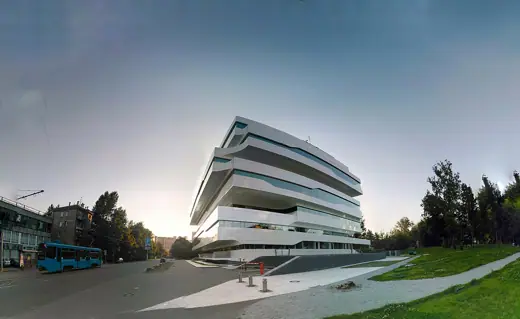
Dominion Tower2015 · Moscow Port House2016 · Antwerp
Port House2016 · Antwerp Generali Tower2017 · Milan
Generali Tower2017 · Milan Morpheus Hotel2018 · Macau
Morpheus Hotel2018 · Macau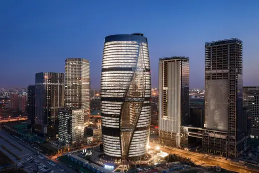
Leeza SOHO2019 · Beijing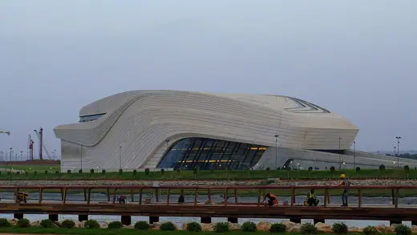
Royal Theatre of Rabat2021 · Rabat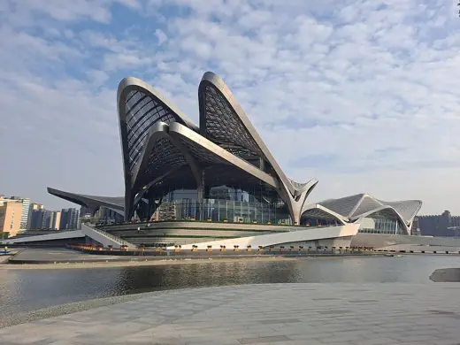
Jinwan Arts Center2023 · Zhuhai KAFD Metro Station2024 · Riyadh
KAFD Metro Station2024 · Riyadh